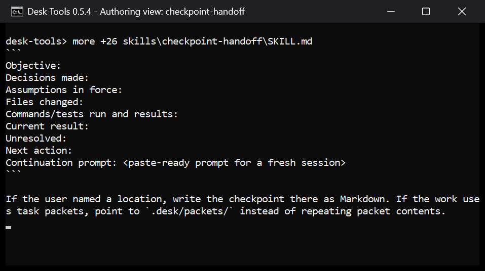

Pick up an unfinished review.
Desk Tools bundles 11 skills for GitHub Copilot: review and handoff, research and comparison, corpus inventory, bounded tasks, and instruction maintenance. The walkthrough below uses two of them to show what it looks like to verify a finding and hand it off.
Follow a review and handoffChoose a skill for the work at hand.
Reviewing a change is different from counting what is in a corpus or preparing a task for a local model. The plugin includes a separate workflow for each, so you can ask for the work you need without starting a larger process.
Review, compare, and research
review-work, compare-materials, summarize-document, focused-research, and fast-desk cover checking work, reading a defined set of material, and answering a narrow question.
Account for a corpus
corpus-inventory and manifest-checkpoint use bundled census and reconciliation scripts to track what was inventoried and where to resume. An inventory is not proof that every file was read.
Scope a task and hand it off
task-packet, local-bounded-task, and checkpoint-handoff define a narrow assignment, its acceptance checks, and what the next session needs to know.
Keep instructions working after a change
kernel-integrity checks whether an instruction still serves the same function after a rewrite or port.
Browse all 11 skills. The public bundle’s README includes a CLI discovery check; it does not establish behavior on every host.
What the next reviewer needs to know
The README tells people to use the new option, but its copyable command still uses the old one. That is the kind of inconsistency that survives a clean-looking edit, then shows up when a colleague tries the command.
Review the change
Quote both lines so the maintainer can reproduce the discrepancy. The declared option is --output; the pasted example still says --out. Leave the file alone during the review.
Preserve the rule when moving the skill
If a team ports this review skill to another host, “don’t edit during review” has to stay in instructions the target actually loads. Keeping the same sentence only in an optional reference is not equivalent. The port checklist leaves that control on hold until the reviewer can show where it is enforced.
Read the control-placement checklist. This example explains the port check; it is not a claim that a host enforces it automatically.
Load the plugin
With GitHub Copilot CLI installed, download the source ZIP and extract it. Open PowerShell in the folder containing plugins. Make a folder for the sample and switch to it:
$plugin = (Resolve-Path .\plugins\desk-tools).Path
New-Item -ItemType Directory -Path .\review-example
Set-Location .\review-exampleSave the sample README as sample-readme.txt in review-example. The example uses an old option on purpose. Then start Copilot in that folder:
copilot --plugin-dir "$plugin"Review the command, then hand it off
Use these prompts in the same Copilot session.
Review the change
Usereview-workonsample-readme.txt. Does the example use the option described above it? Quote the conflicting lines. Don’t edit the file.
Leave the next action
Use checkpoint-handoff to record which command needs changing and how the next reviewer can check it.
